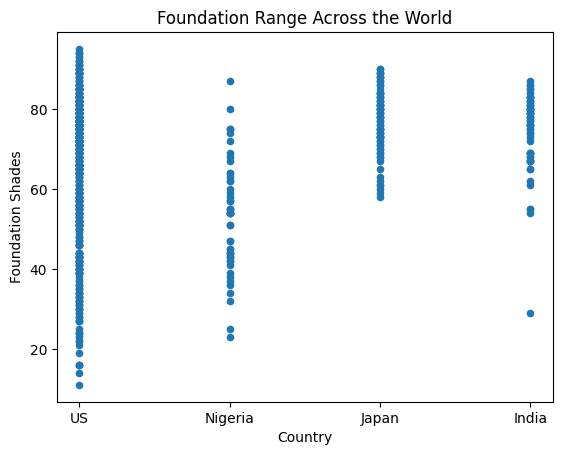
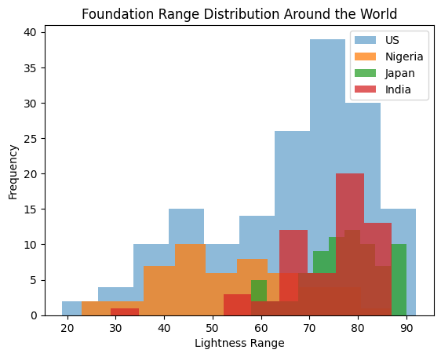

import pandas as pd
import matplotlib.pyplot as plt
import matplotlib.patches as mpatches
shadesdf = pd.read_csv('https://raw.githubusercontent.com/cassidytu/dh140/main/shades.csv')
sortedshadesdf = pd.read_csv('https://raw.githubusercontent.com/cassidytu/dh140/main/shades_sorted.csv')title: “Final Project”
description: “Blog Post”
author: “Cassidy Tu”
date: “03/011/2023”
date-modified: “03/011/2023”
Diversity in Beauty: Shade Ranges
This narrative looks into data collected about cosmetic companies and their most popular liquid foundation line shade ranges. It explores and analyzes the characteristics of these shade ranges to learn more about shade availability from beauty brands in the US and around the world. Here, the project seeks to investigate the diversity and inclusion (or lack of) in foundation products and in the beauty industry.
Research Question
How inclusive and diverse are beauty brands around the world, in regards to skin tones and foundation shade ranges?
Context
This project was created for a digital humanities course, exploring Python within the lens of how it can be used in the humanities, taught by Professor Ben Winjum at UCLA in Winter of 2023.
I chose a dataset from The Pudding essay “Beauty Brawl”, which presents the shade ranges of foundation lines offered by beauty brands in four different countries. Find the Shades Dataset here.
Data
Summary:
This dataset represents the shade ranges of foundation offered by beauty brands around the world.
A list of “best seller” beauty brands in the US, Nigeria, India, and Japan was curated, verified# The Narrative
People of color often face a lack of diversity and inclusivity in society, from education to entertainment and the beauty industry is no exemption. Many major beauty brands create products that fail to cater to users who have darker skin tones, with a limited range and a lack of variations in undertones. Inclusivity and accessibility for darker skin tones is the bare minimum for beauty brands that seems to be non-existent, unfortunately.
Data
The data presents the shades of foundation offered by a variety of beauty brands around the world, specifically the U.S., Nigeria, Japan, and India.
Group Column Definition:
• 0: Fenty Beauty’s PRO FILT’R Foundation Only
• 1: Make Up For Ever’s Ultra HD Foundation Only
• 2: US Best Sellers
• 3: BIPOC-recommended Brands with BIPOC Founders
• 4: BIPOC-recommended Brands with White Founders
• 5: Nigerian Best Sellers
• 6: Japanese Best Sellers
• 7: Indian Best Sellers
Understanding the group breakdown allows for us to quickly compare the foundation shade ranges of each category.
Methodology
A list of “best seller” beauty brands in the US, Nigeria, India, and Japan was curated, verified through several sources in their home countries. During May 2018, each brand’s website was visited and the liquid foundation line that (at the time of our sampling) had the largest number of shades available was selected to be recorded. The hex color values for each of the colored swatches shown for the product was documented. Then, using Adobe Photoshop, the lightness value of each color (using the CIE Lab color model) was extracted. Sources consulted to decide what brands/products to sample:
US bestseller lists: POPSUGAR, Amazon, StyleCaster, Refinery29, Statista, BEAUTY/crew
Articles recommending beauty products to people of color: VIBE, Byrdie, The FADER, Allure, Glamour, Fast Company, THE CUT, Bustle, HuffPost, more.com, BuzzFeed, Refinery29
Articles recommending Nigerian beauty products: BeautyInLagos, Beauty Geek, Lux Afrique, Zikel Cosmetics, Pulse.ng Pulse.ng again, Information Nigeria Women, Girly Essentials, Winnie The Make-Up Artist, Jumia Travel
I created two sorted datasets from The Pudding’s dataset that organized the brands according to groups (also creating a new column that separated each brand by country). One of the datasets (sorted_shades) I had cleaned consists of only the darkest and lightest shade offered by each brand, as this was the primary data I focused on for visualizations through several sources in their home countries.
Throughout the project, I will be primarily focusing on the lightness value and plotting out the lightest and darkest shade each brand offers reveals how extensive their range is.
Findings
I created my visualizations in ways that would present more information that was easy to read. Color coordinating the different country groups is also helpful to remphasizing the question of diversity in beauty brands around the world.
shadesdf.plot(x='country', y='L',
kind='scatter',
title='Foundation Range Across the World',
ylabel='Foundation Shades', xlabel='Country')
#set x-axis ticks to country names
labels = ['US', 'Nigeria', 'Japan', 'India']
plt.xticks([0,1,2,3], labels)([<matplotlib.axis.XTick at 0x7efc3d38b2e0>,
<matplotlib.axis.XTick at 0x7efc3d38b2b0>,
<matplotlib.axis.XTick at 0x7efc3d3c3310>,
<matplotlib.axis.XTick at 0x7efc3d3c3c70>],
[Text(0, 0, 'US'),
Text(1, 0, 'Nigeria'),
Text(2, 0, 'Japan'),
Text(3, 0, 'India')])
Note: I reorganized the data so that the groups were simplified to solely include countries as the main category. This would allow for a clear distinction between the different countries compared to the previous version. I also added labels to the x-axis ticks to make the graph easier to read.
The scatter plot clearly reveals that US beauty brands have a more extensive range in shades. It is also noticeable that in comparison to the other countries, Japan and India, have a cosmetic companies that have a tendency to cater to lighter skin tones.
#extract sections of the dataset; best sellers of each country
us = shadesdf.loc[82:246]
nigeria = shadesdf.loc[444:493]
japan = shadesdf.loc[494:567]
india = shadesdf.loc[568:]
#plot histograms
plt.hist(us['L'],
label='US',
alpha=0.5)
plt.hist(nigeria['L'],
label='Nigeria',
alpha=0.75)
plt.hist(japan['L'],
label='Japan',
alpha=0.75)
plt.hist(india['L'],
label='India',
alpha=0.75)
plt.legend(loc='upper right') #legend
plt.title('Foundation Range Distribution Around the World')
plt.xlabel('Lightness Range')
plt.ylabel('Frequency')
plt.show()
Note: Excluded group data about Fenty and Make Up For Ever, as to focus on each country’s best sellers and prevent skewing the graph more. It is best to note that there was more data collected for brands in the US, compared to the other countries, which may present the histogram differently.
Here, we can explicitly see the shape and outline of the distribution of each countries’ best foundation sellers. All the histograms of the US, Japan, and India skew towards the higher and lighter end of the shade spectrum. While, Nigeria skews towards the darker and lower end of the shade range, indicating that most of their brands cater to a darker skin tone for the majority of their products.
#sort data according to darkest
sortedDshadesdf = sortedshadesdf.sort_values('darkest', ascending=False)
plt.figure(figsize=(5,8))
plt.barh(sortedDshadesdf['brand'], sortedDshadesdf['darkest'],
color = sortedDshadesdf['gcolor'].values)
plt.title('Darkest Foundation Shade for Each Brand')
#create legend
pop_a = mpatches.Patch(color='b', label='US Best Sellers')
pop_b = mpatches.Patch(color='g', label='US BIPOC Founders')
pop_c = mpatches.Patch(color='r', label='US White Founders')
pop_d = mpatches.Patch(color='y', label='Nigerian Best Sellers')
pop_e = mpatches.Patch(color='c', label='Japanese Best Sellers')
pop_f = mpatches.Patch(color='m', label='Indian Best Sellers')
plt.legend(handles=[pop_a,pop_b,pop_c,pop_d,pop_e,pop_f])
plt.show()Note: Green = US BIPOC-recommended Brands with BIPOC Founders
Red = US BIPOC-recommended Brands with White Founders
As seen in the plot, a majority of the Japanese and Indian Best Seller Foundations tend to be graphed towards the bottom, indicating that their “darkest” shade offered are the lightest of the data. Laws of Nature, a US BIPOC-recommended beauty brand led by a BIPOC founder and CEO, provides the darkest shade among the all the cosmetic companies.
#sort data according to lightest
sortedLshadesdf = sortedshadesdf.sort_values('lightest')
plt.figure(figsize=(5,8))
plt.barh(sortedLshadesdf['brand'], sortedLshadesdf['lightest'],
color = sortedLshadesdf['gcolor'].values)
plt.title('Lightest Foundation Shade for Each Brand')
#create legend
pop_a = mpatches.Patch(color='b', label='US Best Sellers')
pop_b = mpatches.Patch(color='g', label='US BIPOC Founders')
pop_c = mpatches.Patch(color='r', label='US White Founders')
pop_d = mpatches.Patch(color='y', label='Nigerian Best Sellers')
pop_e = mpatches.Patch(color='c', label='Japanese Best Sellers')
pop_f = mpatches.Patch(color='m', label='Indian Best Sellers')
plt.legend(handles=[pop_a,pop_b,pop_c,pop_d,pop_e,pop_f],
loc='center left', bbox_to_anchor=(1, 0.5)) #place outside
plt.show()Note: Green = US BIPOC-recommended Brands with BIPOC Founders
Red = US BIPOC-recommended Brands with White Founders
In comparison to the previous visualization, “Darkest Foundation Shade for Each Brand”, it is clear that more brands cater to lighter skin tones. There is less of a difference between the top and bottom brand in terms of the lightest shades that they offer, especially when compared to the difference between the top and bottom darkest shade available.
Discussion
Overall, the question being asked is how inclusive and diverse are beauty brands around the world, in regards to skin tones and foundation shade ranges?
We can see that there is a large discrepancy between the visualizations, of the “Lightest” and “Darkest” Foundation Shade of Each Brand, between the top and bottom beauty brand. This reveals that many of these cosmetic companies do not cater to darker skin tones, but have no issue providing shades for lighter skinned consumers. Offering a darker shade range is far and few, typically only seen in US beauty brands but more specifically BIPOC-recommended brands led by BIPOC founders.
However, in the “Foundation Range Distribution Around the World” visualization, we see that most of the countries in the dataset (the US, Japan, and India) skew towards providing more shade ranges for lighter rather than darker tones. I would like to acknowledge that the availability of foundation shades are often based on the demand of consumers and that certain countries have varying skin tone ranges (like Nigeria in comparision to Japan). However, considering societal standards of beauty (and other various factors that contribute to it) and the common trend towards catering to lighter skin tones in more diverse countries like the US, the limited shade avaliability is still of concern. The various visualizations in this project supports the answer that beauty brands around the world have much more work to get closer to a more inclusive and diverse, as there is a lack of darker shade ranges needed to combat the prejudice that beautiful skin is lighter skin.